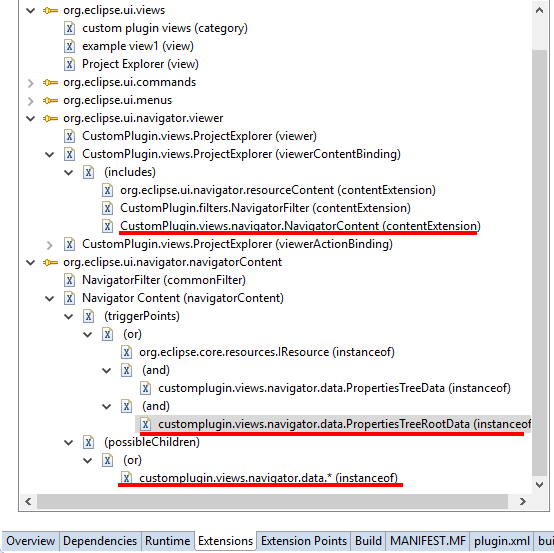
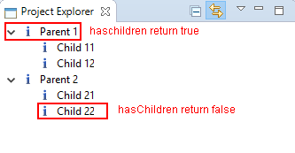

In this section, we will add our own parent node (PropertiesTreeParentData) and children node (PropertiesTreeData) to the common navigator. Before starting this section, please get familiar with "Add contents to common navigator". The following section will only explain the code.
Here is code of PropertiesTreeData and ProertiesTreeParentData.
1. For PropertiesTreeData, hashCode() and equals(Object obj) must be implemented because the Eclispe will use Set to save the node shown on the navigator and call equals() method to help find the exact element.
import java.util.UUID;
import org.eclipse.core.resources.IFile;
import org.eclipse.core.resources.IProject;
public class PropertiesTreeData {
// TODO Auto-generated constructor stub
private String name;
private IFile file;
private IProject project;
private String ID = UUID.randomUUID().toString();//make the object unique
public PropertiesTreeData(String name, IFile file, IProject project) {
// TODO Auto-generated constructor stub
this.name = name;
this.file = file;
this.project = project;
}
public String getID(){
return this.ID;
}
public IProject getProject(){
return this.project;
}
public String getName(){
return this.name;
}
/**
* Eclispe will use Set to save the node shown on the navigator. Thus, it is necessary to implement this method.
*/
public int hashCode() {
return ID.hashCode();
}
/**
* The inner code will call this method to find the exact node when the user want to make update to the navigator
*/
public boolean equals(Object obj) {
return obj instanceof PropertiesTreeData
&& ((PropertiesTreeData) obj).getID().equals(ID);
}
}
2. For PropertiesTreeParentData, it extends PropertiesTreeData. As the parent element, it has the information of its children nodes (ArrayList
import java.util.ArrayList;
import org.eclipse.core.resources.IFile;
import org.eclipse.core.resources.IProject;
public class PropertiesTreeParentData extends PropertiesTreeData{
private ArrayList children;
public PropertiesTreeParentData(String name, IFile file, IProject project) {
super(name, file, project);
// TODO Auto-generated constructor stub
children = new ArrayList();
}
public void addChild(PropertiesTreeData child){
children.add(child);
}
public void removeChild(PropertiesTreeData child){
children.remove(child);
}
public Object[] getChildren(){
return this.children.toArray();
}
}
3. To show our data when the navigator is open, we need a root data to generate our data and trigger the getChildren method in content provider.
PropertiesTreeRootData will generate two parent nodes and two children nodes for every parent node.
import org.eclipse.core.runtime.IAdaptable;
import java.util.ArrayList;
import org.eclipse.core.runtime.IAdaptable;
public class PropertiesTreeRootData implements IAdaptable{
private ArrayList parents;
@Override
public T getAdapter(Class adapter) {
// TODO Auto-generated method stub
return null;
}
public PropertiesTreeRootData(){
parents = new ArrayList();
//create parent nodes and its children nodes
for(int i = 1; i < 3; i++){
PropertiesTreeParentData parent = new PropertiesTreeParentData("Parent " + i, null, null);
for(int j = 1; j < 3; j++){
PropertiesTreeData child = new PropertiesTreeData("Child " + i+ j, null, null);
parent.addChild(child);
}
parents.add(parent);
}
}
public Object[] getParentNodes(){
return this.parents.toArray();
}
}
4. We also need to create the root node when the project explorer initializes. The getInitialInput() in the method that can transfer the initial object to the content provider in the navigator. So we can use it to transfer the root object to trigger the content provider.
public class ProjectExplorer extends CommonNavigator {
public static final String ID = "CustomPlugin.views.ProjectExplorer";
protected IAdaptable getInitialInput()
{
return new PropertiesTreeRootData();
}
}
5. The content provider will capture the root node which we can use to generate all the elements in the navigator.
public class NavigatorContentProvider implements ITreeContentProvider {
@Override
public void dispose() {
// TODO Auto-generated method stub
}
@Override
public void inputChanged(Viewer viewer, Object oldInput, Object newInput) {
// TODO Auto-generated method stub
}
@Override
public Object[] getElements(Object inputElement) {
// TODO Auto-generated method stub
return getChildren(inputElement);
}
@Override
public Object[] getChildren(Object parentElement) {
// TODO Auto-generated method stub
if(parentElement instanceof PropertiesTreeRootData){
return ((PropertiesTreeRootData)parentElement).getParentNodes();
}
else if(parentElement instanceof PropertiesTreeParentData){
return ((PropertiesTreeParentData)parentElement).getChildren();
}
return null;
}
@Override
public Object getParent(Object element) {
// TODO Auto-generated method stub
return null;
}
@Override
public boolean hasChildren(Object element) {
// TODO Auto-generated method stub
if(element instanceof PropertiesTreeParentData){
return true;
}
return false;
}
}
6. The label provider will show the name and image to every elements.
public class NavigatorLabelProvider extends LabelProvider implements ILabelProvider, IDescriptionProvider{
@Override
public String getText(Object element){
if(element instanceof PropertiesTreeData){
return ((PropertiesTreeData)element).getName();
}
return null;
}
@Override
public Image getImage(Object element){
if(element instanceof PropertiesTreeData){
return PlatformUI.getWorkbench().getSharedImages().getImage(ISharedImages.IMG_OBJS_INFO_TSK);
}
return null;
}
@Override
public String getDescription(Object anElement) {
// TODO Auto-generated method stub
return "This is a tree data";
}
}
7. In order to only show our own data on the navigator, we need to add a filter to hide other elements.
public class NavigatorFilter extends ViewerFilter {
public NavigatorFilter() {
// TODO Auto-generated constructor stub
}
@Override
public boolean select(Viewer viewer, Object parentElement, Object element) {
// TODO Auto-generated method stub
if(element instanceof PropertiesTreeData){
return true;
}
if(element instanceof PropertiesTreeRootData){
return true;
}
return false;
}
}
8. Modify the triggerPoints and possibleChildrens shown in the figure.
9. Result
When we open the project view, we can see there are two parent elements shown on the navigator.
